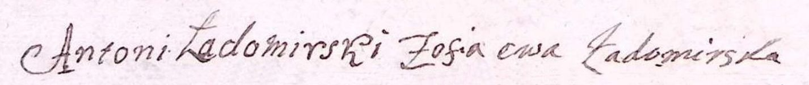

-
Antoni z Ładomirowa Ładomirski h. Ładazm. między 16.05.1738 a 03.05.1740

-
Józef Ładomirskitowarzysz chorągwi pancernej
cześnik żytomierskizm. na Syberii po 1774ż. Teresa Witosławska -
Barbara Ładomirskaśl. przed 1737m. Jan Bańkowski proboszcz g-k par. w Rzepniku
-
Ignacy Ładomirskiż. Katarzyna Trzecieska
-
Franciszka Ładomirska
-
Wincenty Borysławskizm. 1812
-
Anna Ładomirskaur. ok. 1767
zm. 20.06.1806 Jazowsko
śl. 05.02.1789 Fara Krosnom. Adam Iwelski ur. ok. 1765
zm. 17.11.1829 par. Borzęcin
/2v Marianna Łączkowska 19.04.1807 par. Jazowsko/ -
Jan Ładomirskiur. 13.03.1768 Zasów
chrz. 17.07.1768 W-wa par. św. Aleksandra
zm. 02.05.1843 Koniuszki
poch. 04.05.1843 Koniuszki
śl. 27.04.1794 parafia Krzywczedzierż. dóbr Gusztynek, Bereżanka i Olesza-
Maciej Brutus Ładomirskiur. 24.02.1798 Filipkowce
chrz. 21.04.1815 Krzywczedzierż. dóbr Taurów, Koniuszki i Kozłów
oficjalista w Kozłowie k/Buska w dobrach Adama Kleta hr. Zamoyskiego
wł. dóbr Wierzchnia
-